Proyecto de Extensión · Facultad de Medicina
Inicio y desarrollo del proyecto mediante extensión universitaria.
Ver antecedente →Ciencia COOLinaria® utiliza la cocina como laboratorio para despertar curiosidad, experimentar y comprender ciencia de los alimentos desde situaciones cotidianas.
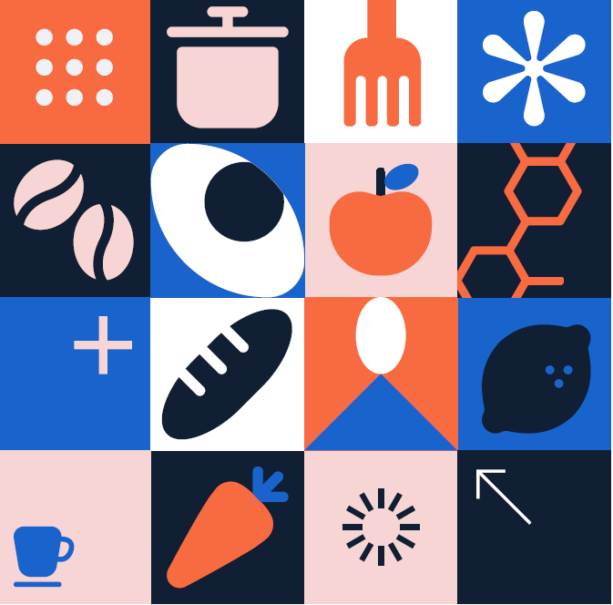
Ciencia COOLinaria® combina ciencia, nutrición, alimentos y cocina mediante experiencias de indagación desarrolladas para escolares, docentes y comunidades.
La cocina permite observar directamente transformaciones físicas, químicas y biológicas presentes en los alimentos.
Los nueve laboratorios audiovisuales están reunidos en la playlist oficial de Ciencia COOLinaria®.
Partimos de preguntas que nacen de la cocina y la vida cotidiana.
Modificamos ingredientes, tiempo, temperatura y procedimientos.
Observamos, registramos y comparamos resultados.
Relacionamos lo observado con principios científicos.
Inicio y desarrollo del proyecto mediante extensión universitaria.
Ver antecedente →Experiencias con establecimientos escolares y actividades prácticas.
Ver experiencia →Laboratorios para escolares con interés y talento académico.
Ver experiencia →Curso Ciencia COOLinaria®: una travesía culinaria cargada de ciencia.
Ver experiencia →Actividades en escuelas y laboratorios universitarios.
Leer noticia →Nueva etapa de extensión vinculada con ciencia, alimentación y bienestar.
Conocer proyecto →Selección basada en los antecedentes documentales aportados para el registro de la marca.
Artículo dedicado a la propuesta educativa de Ciencia COOLinaria®.
Leer noticia →Actividad de Nutrición UC vinculada con la metodología del proyecto.
Leer noticia →Registro fotográfico y difusión del curso en la Academia de Desarrollo de Talentos UC.
Ver publicación →Nota institucional sobre la experiencia de la Academia de Talentos.
Leer noticia →Nueva etapa de Ciencia COOLinaria® para el bienestar en clubes de barrio.
Leer noticia →Registro de Ciencia COOLinaria® en la plataforma de iniciativas de la Universidad de Chile.
Ver ficha →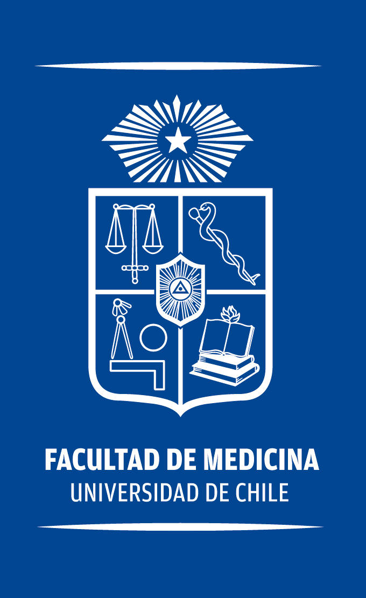
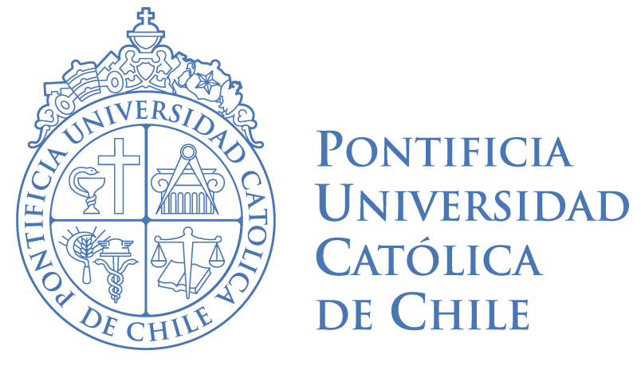
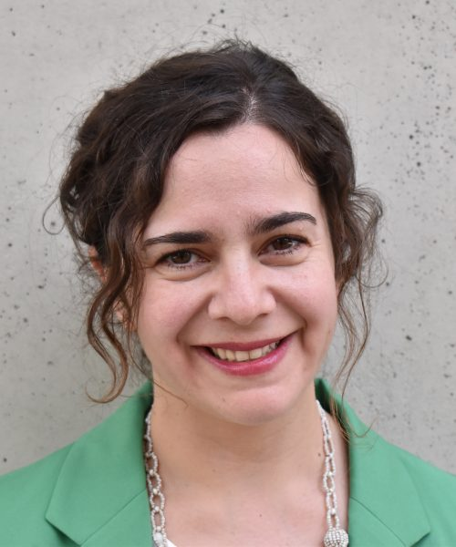
Profesora Asistente, Departamento de Nutrición y Dietética, Escuela de Ciencias de la Salud, Pontificia Universidad Católica de Chile.
Ver perfil académico UC →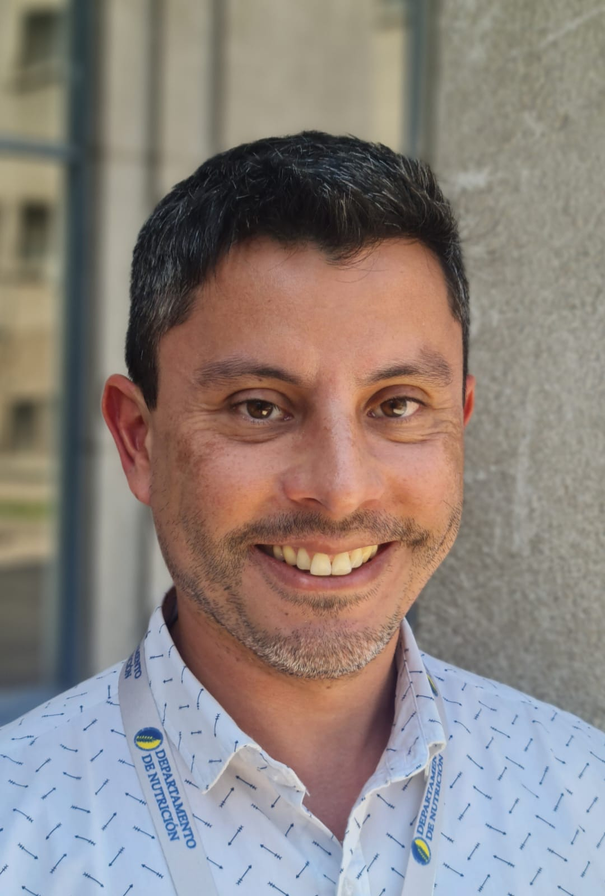
Profesor Asistente, Departamento de Nutrición, Facultad de Medicina, Universidad de Chile.
Ver portafolio académico UChile →Ciencia COOLinaria® se desarrolla con la participación activa de estudiantes de la carrera de Nutrición y Dietética de la Pontificia Universidad Católica de Chile y de Nutrición de la Universidad de Chile, junto con estudiantes de postgrado de ambas universidades.
Su participación forma parte de un proceso formativo en el que la ciencia, la docencia y la vinculación con el medio se conectan en experiencias reales. Las y los estudiantes colaboran en la preparación de actividades, acompañan los laboratorios, dialogan con escolares y comunidades y contribuyen a transformar conceptos científicos en experiencias cercanas y comprensibles.
Esta colaboración entre universidades, carreras y niveles de formación es un componente esencial de Ciencia COOLinaria®: el proyecto funciona porque se construye colectivamente, integrando académicos, estudiantes de pregrado, estudiantes de postgrado y comunidades.
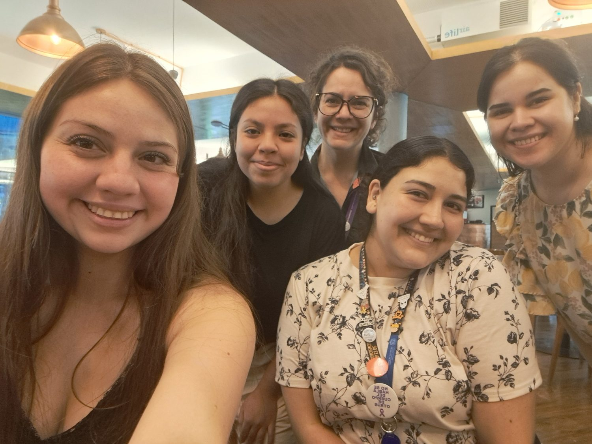
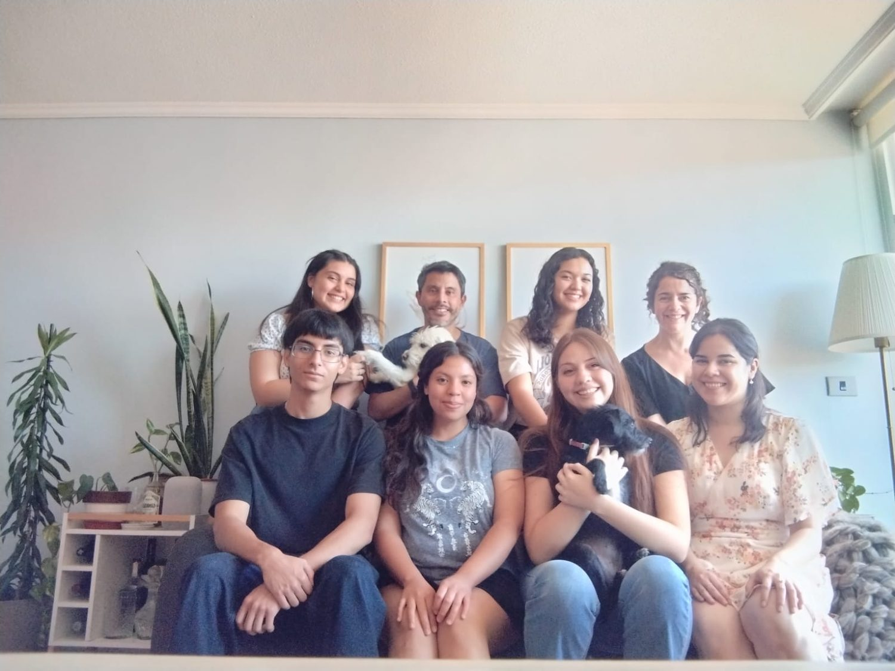
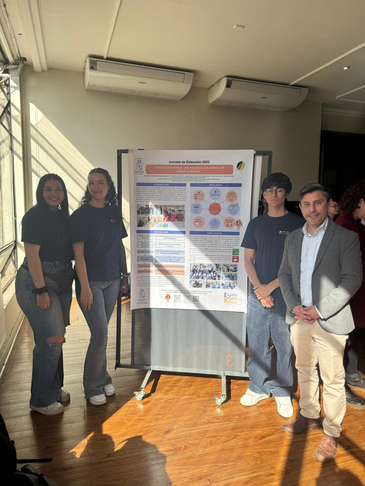
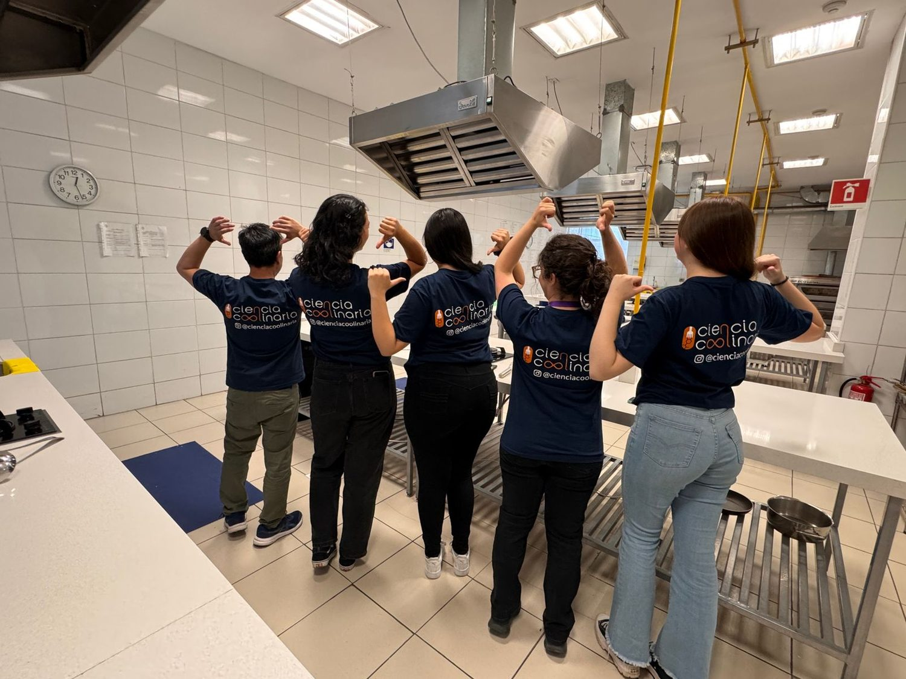
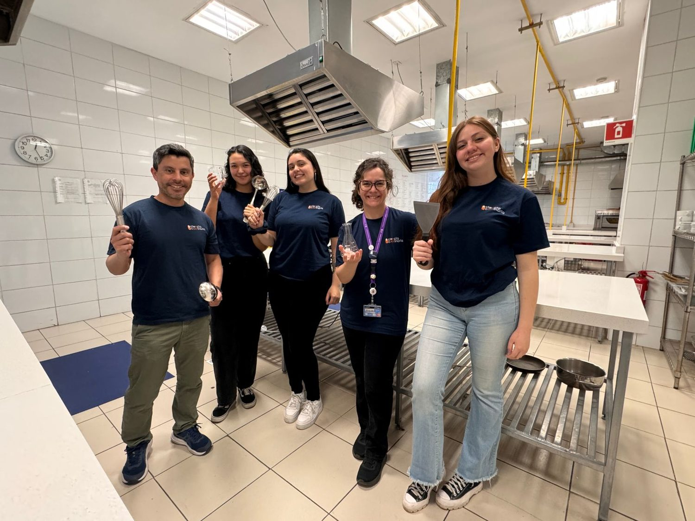
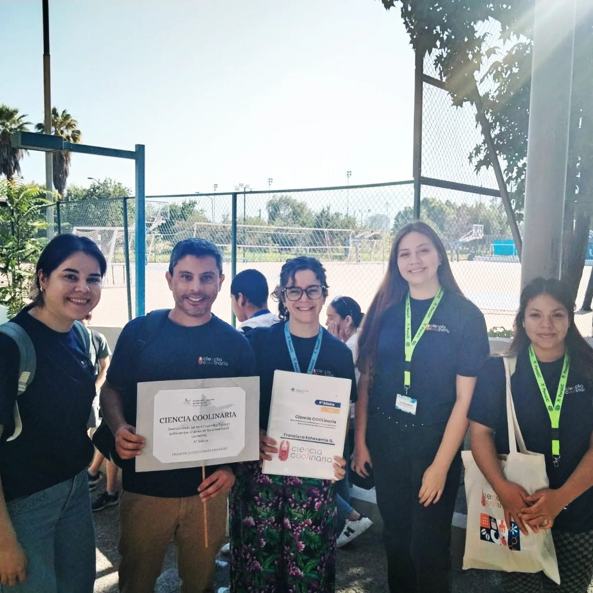
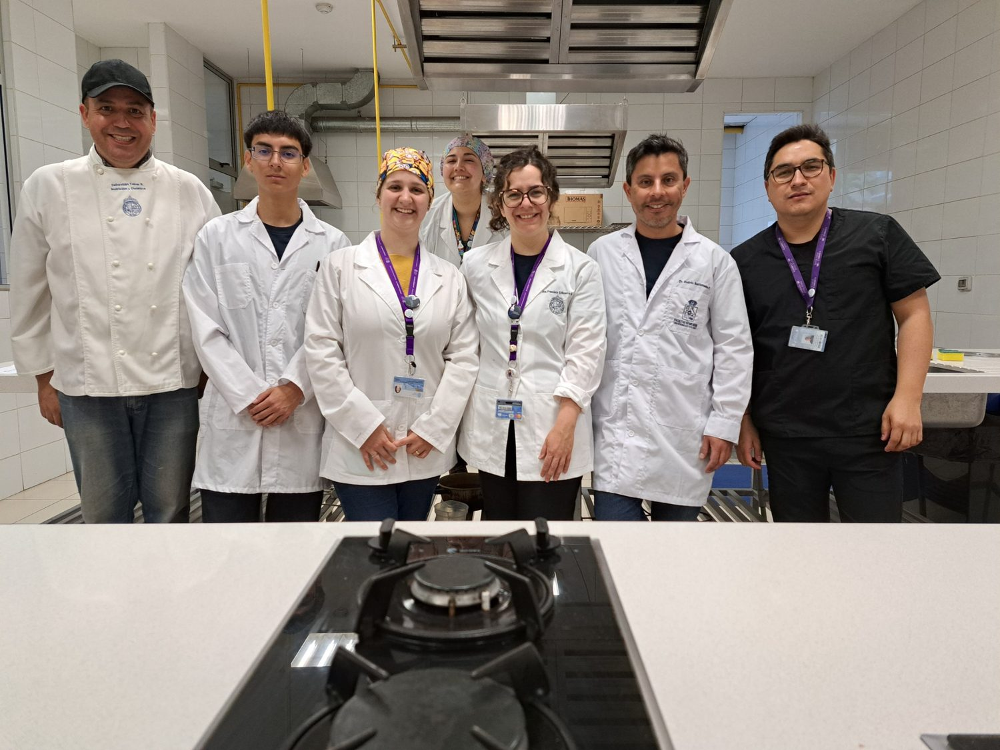
Una selección de talleres, laboratorios y experiencias con estudiantes y comunidades.
Para actividades, colaboraciones y nuevos laboratorios.